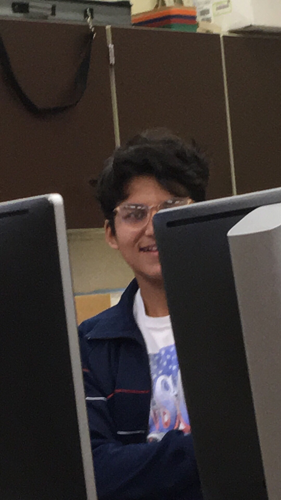

<!DOCTYPE html>
<html lang="en"></html>
<head>
    <title>Aaron's Data Ethics Hwk 3</title>
    <h3>SIGCSE</h3>
    <a href="https://www.youtube.com/watch?v=SHZN2oXeW8s&ab_channel=EdwinKrow" target="_blank">Hey! Listen!</a>
    <br>
    <style>

        body {
        padding: 20px;
        background-color: #121212;
        color: white;
        font-size: 20px;
        }
        a:link {
            color: aquamarine;
            background-color: transparent;
            text-decoration: none;
            }

            a:visited {
            color: aquamarine;
            background-color: transparent;
            text-decoration: none;
            }

            a:hover {
            color: aquamarine;
            background-color: transparent;
            text-decoration: underline;
            }
        </style>
        
        <br>
        <body onload="draw();">
            <canvas id="canvas" width="400" height="400" style="border:5px solid #ffffff;"></canvas>
            <p><button onclick="doodle()">Draw Jesus</button></p>
               <script>
                function doodle() {
                  var c = document.getElementById("canvas");
                  var ctx = c.getContext("2d");
                  var img = document.getElementById("Jesus");
                  ctx.drawImage(img, 10, 10, 400, 400);
                }
                </script>        
        <br>
        <p>According to the article, the computer science education community relies on others to not go against the grain and accepting things with quiet rage. Therefore, change is needed in terms of culture for the improvement of the community</p>
        <br>
        <p>The author criticizes the event's lack of diversity and inclusivity in terms of gender and race which portrays how problematic the community currently is.</p>
        <br>
        <p>The organization should address and resolve its issues in terms of diversity, and inclusivity.</p>
        <br> 
        <p>As a program, but also as a community, it is important to protect shcolars of all backgrounds and positions from offensive comments and reviews to improve our community.</p>
        <br>
        <p>More needs to be done to address diversity in this event to ensure representation to all levels</p>
        <br>
        <p>As a community, we must prioritize and address the needs and interests computer sicence educators and students need</p>
        <br>
        <p>A lack of addressing diversity in the field of computer science creates a disparity in opportunities.</p>
        <br>
        <p>Feedback and reviews help us improve; however it becomes a problem when the criticism become selective and biased. </p>
        <br>
        <p><strong>By promoting diversity and inclusion; not only do we create a more equitable society, but we create opportunities for people of all backgrounds to take part in the field of Computer Science. </strong></p>
        <br>

        </body>
        